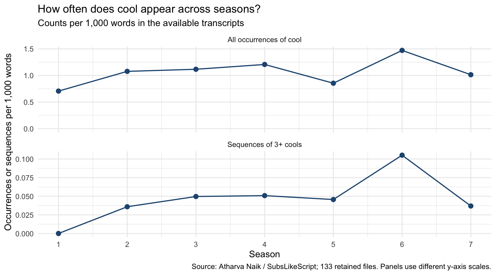
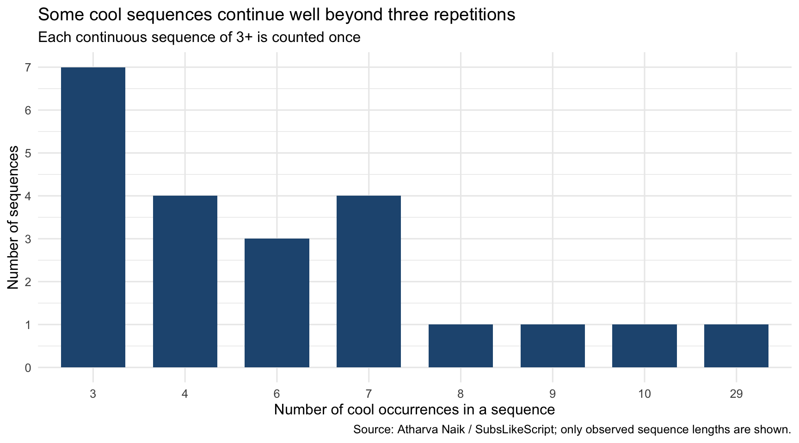
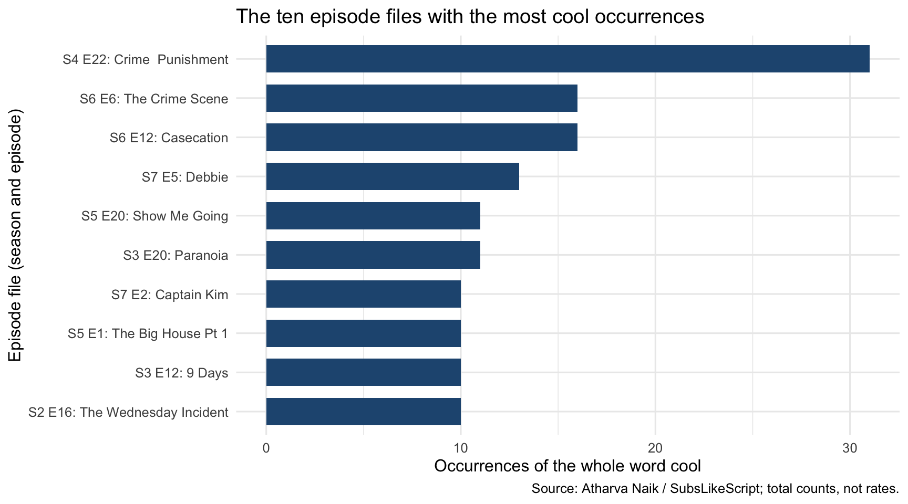

For this project, I wanted to find out how often “cool” appears in Brooklyn Nine-Nine, especially when it turns into “cool, cool, cool.” I also wanted to see how this changes across seasons.
I count each “cool” and each repeated sequence separately. So “cool, cool, cool, cool” counts as four mentions of the word and one sequence. I use the available transcripts, which do not tell me who is speaking.
Getting the data ready
The data come from Atharva Naik’s Brooklyn Nine-Nine dataset. He collected the transcripts from SubsLikeScript. The original files are saved in data/brooklyn99 in this website’s GitHub repository. Each file contains pieces of an episode’s transcript.
The dataset has 134 files from seasons 1–7, but some episodes are missing and there is no season 8. I leave out season-4/episode-11-DUPE.json because it is unclear which episode it represents. It is also much longer than the other season 4 files. I keep the original file in the data folder, but leaving it out of the analysis gives me 133 transcript files to work with.
First, I load the files and get the season and episode numbers from their names. Then I remove the subtitle credits I identified, make the text lowercase, and clean up extra spaces. I join the pieces of each transcript so a line break does not cut off a repeated “cool.” I keep repeated dialogue because that is what I am trying to count.
“Cool” and “cool” both count. “Cooler,” “coolest,” and “cooling” do not.
A repeated sequence needs three or more “cool”s in a row. Spaces, commas, periods, hyphens, and line breaks can come between them.
Six “cool”s in a row count as one sequence, not two sequences of three.
I count “cool” even in “not cool” or when someone quotes another person. I am counting the words, not deciding what they mean in each scene.
The lookbehind and lookahead in cool_pattern check that “cool” is not part of a longer word. In run_pattern, {2,} looks for at least two more “cool”s after the first one. I also count the words in each transcript so I can compare seasons. For this count, a word is a group of letters or numbers, and apostrophes inside a word are allowed.
In these files, “cool” appears 529 times, with 22 sequences of three or more. Those sequences account for 139 mentions, or 26.3% of the total. The other mentions include both single uses and pairs.
Does it change by season?
Some seasons have more transcripts than others, so comparing only the totals would give them more chances to come out on top. Instead, I compare counts per 1,000 transcript words. I calculate this by dividing each season’s total count by its total words and multiplying by 1,000. I use the season totals rather than averaging the rates for separate episodes.
Show R code
season_summary <- episodes |>group_by(season) |>summarise(transcript_files =n(),words =sum(words),cool_mentions =sum(cool_mentions),repeated_sequences =sum(repeated_sequences),.groups ="drop" ) |>mutate(cool_per_1000 =1000* cool_mentions / words,runs_per_1000 =1000* repeated_sequences / words )season_plot_data <- season_summary |>select(season, cool_per_1000, runs_per_1000) |>pivot_longer(cols =c(cool_per_1000, runs_per_1000),names_to ="measure", values_to ="rate" ) |>mutate(measure =recode( measure,cool_per_1000 ="All occurrences of cool",runs_per_1000 ="Sequences of 3+ cools" ))ggplot(season_plot_data, aes(x = season, y = rate)) +geom_line(color ="#245680", linewidth =0.7) +geom_point(color ="#245680", size =2.5) +facet_wrap(~ measure, ncol =1, scales ="free_y") +scale_x_continuous(breaks =1:7) +scale_y_continuous(limits =c(0, NA)) +labs(title ="How often does cool appear across seasons?",subtitle ="Counts per 1,000 words in the available transcripts",x ="Season",y ="Occurrences or sequences per 1,000 words",caption ="Source: Atharva Naik / SubsLikeScript; 133 retained files. Panels use different y-axis scales." ) +theme_minimal(base_size =12)

Season 6 has the highest rate, with about 1.47 “cool”s per 1,000 words. Season 1 has 54 mentions, but none are in a sequence of three or more. In this dataset, those sequences start appearing in season 2.
The graph goes up and down, so “cool” does not simply become more common every season. Also, season 6 only has 11 files here. The missing episodes could change how the seasons compare, so I would not treat this as the final result for the whole show.
How many “cool”s are said in a row?
Show R code
run_summary <- runs |>count(run_length, name ="sequences")top_episodes <- episodes |>arrange(season, episode) |>slice_max(cool_mentions, n =10, with_ties =FALSE) |>mutate(episode_label =str_c("S", season, " E", episode, ": ", title))ggplot(run_summary, aes(x =factor(run_length), y = sequences)) +geom_col(fill ="#245680", width =0.7) +scale_y_continuous(breaks =seq(0, max(run_summary$sequences), by =1)) +labs(title ="Some cool sequences continue well beyond three repetitions",subtitle ="Each continuous sequence of 3+ is counted once",x ="Number of cool occurrences in a sequence",y ="Number of sequences",caption ="Source: Atharva Naik / SubsLikeScript; only observed sequence lengths are shown." ) +theme_minimal(base_size =12)

The most common sequence has 3 “cool”s in a row. There are 7 of these. The longest has 29 and comes from season 4, episode 22, labeled “Crime Punishment” in the filename. In the original file, that repetition runs across several transcript blocks. Joining them keeps it as one sequence.
That does not necessarily mean one character says all of those “cool”s. The transcripts do not label speakers, so the count can join consecutive uses by different people. It also includes someone quoting the phrase. The result depends on the counting rule and on how accurately the dialogue was transcribed.
Which episodes use “cool” the most?
For this graph, I rank the episode files by their total “cool” counts. This includes mentions inside repeated sequences. Unlike the season graph, these are raw totals, so longer transcripts have more chances to include the word. The episode names come from the filenames.
Show R code
ggplot( top_episodes,aes(x = cool_mentions, y =fct_reorder(episode_label, cool_mentions))) +geom_col(fill ="#245680", width =0.7) +labs(title ="The ten episode files with the most cool occurrences",x ="Occurrences of the whole word cool",y ="Episode file (season and episode)",caption ="Source: Atharva Naik / SubsLikeScript; total counts, not rates." ) +theme_minimal(base_size =12)

Season 4, episode 22 comes first with 31 mentions. Most come from its long repeated sequence, so one part of the episode explains a lot of its total. “The Crime Scene” and “Casecation” are next, with 16 mentions each.
What I found
The repeated “cool, cool, cool” sequences make up about a quarter of all the “cool” mentions in these files. So they explain a noticeable part of the total, even though there are only 22 sequences. The season graph shows how often the word appears relative to the amount of dialogue, while the episode graph shows how one long repetition can push an episode to the top.
This is still an incomplete dataset, so I cannot say how many times “cool” is said in the entire show or who says it most. The transcripts were already collected and cleaned before this project, and they may have mistakes or missing dialogue. My results describe the files available here.
Sources
Naik, A. (2021). Brooklyn Nine-Nine dataset. Original JSON transcript files and scraper. Retrieved October 14, 2026.